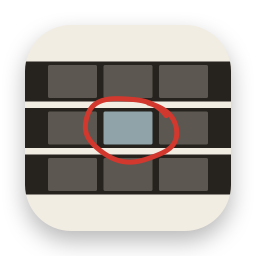
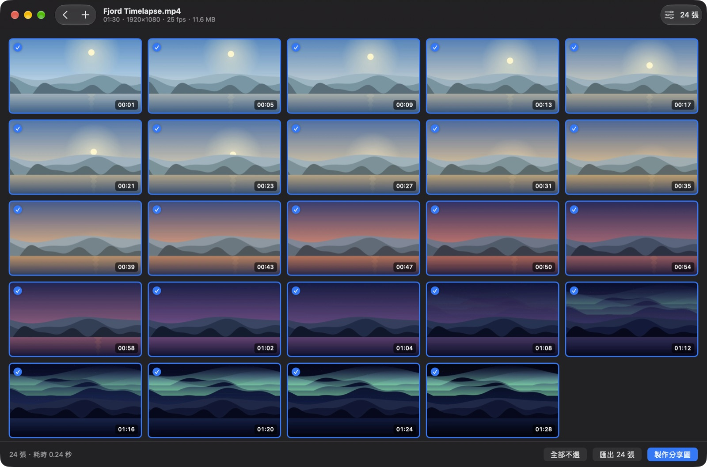

按間隔或按數量
每隔幾秒一張，或在整段影片中平均擷取指定數量。快速模式取最近的關鍵影格，精確模式準確到每一格。

Kvikkshot 是一個小巧的 Mac App：影片一拖進來就變成截圖，再把截圖拼成一張可以分享的圖。免費，所有處理都在你的 Mac 上完成。

每隔幾秒一張，或在整段影片中平均擷取指定數量。快速模式取最近的關鍵影格，精確模式準確到每一格。
把留下的截圖拼成一張圖，附上影片資訊，每一格都標好時間。可以拷貝、儲存，或直接拖進聊天視窗。
截圖只放在私有的暫存檔案夾裡，返回首頁或結束時就會刪除。只有你匯出或儲存的檔案才會保留。
已由 Apple 簽署並完成公證。打開磁碟映像檔，把 Kvikkshot 拖到「應用程式」檔案夾即可。
SHA-256 f02e5fdd29c858d56f2e53f64aeed558141b4facb8957ec503dab8e5cdc8f8c5